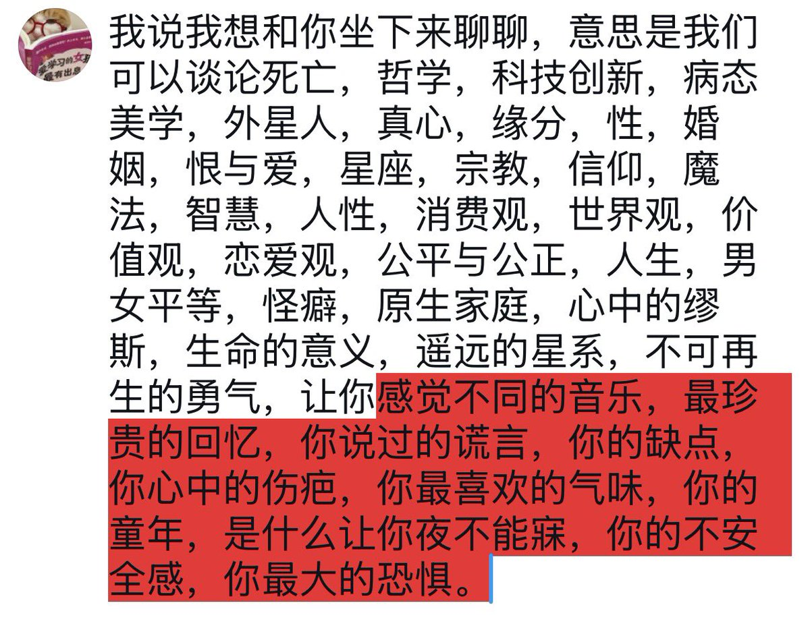

誕生於人性之惡的孩子
@huanzhi75748ai
我真的很喜欢deeptalk。吃饭的时候，玩手机的时候，洗漱的时候，睡前躺在床上的时候。
会突然问闺蜜说“你说人的动物性...” “你会不会觉得...” “...到底有什么意义” “...这样的原因是什么”。
我闺蜜的包容性很强，我说什么她都愿意和我聊两句。而且不会因为观点不一样吵架。

orange cat
@pearl0812lucky
亲密关系需要deep talk https://t.co/T0hFpFH73n